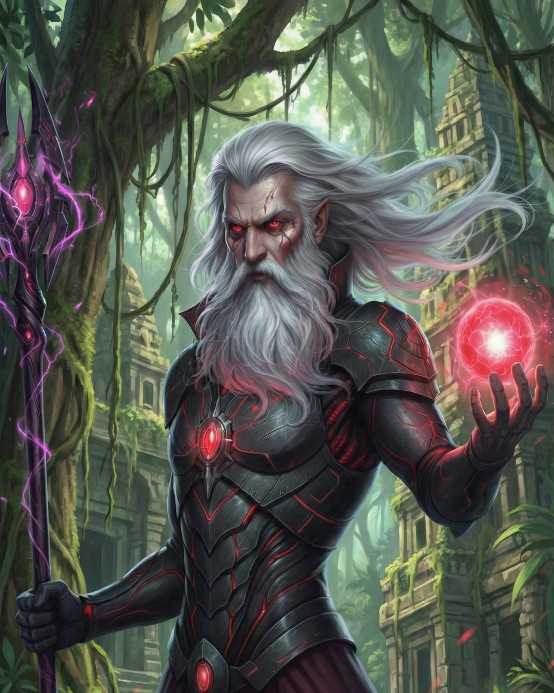

Eirik
Summary
Legendary Duskkin elder and council member whose words reshaped Duskkin society, transforming them from human predators to hunters of mythical creatures
Description
Eirik is one of the most influential figures in modern Duskkin history—an elder whose wisdom and conviction fundamentally altered the course of his entire race. To understand Eirik is to understand the Great Revelation, for he was not merely a witness to that pivotal moment but its architect. In the chaotic years following The Merging, when dimensions collapsed into one another and species that existed only in each other's legends suddenly shared the same reality, the Duskkin faced an existential crisis.
Personality & Character
For millennia, they had sustained themselves on human blood, existing as the vampiric predators of nightmare and folklore. But self-preservation changed everything. Suddenly, humans weren't isolated prey but neighbours, allies, potential partners in navigating this strange new world. Yet the bloodlust remained. Younger Duskkin, driven by instinct and tradition, continued to hunt humans. The spiral was predictable and catastrophic—each feeding sparked retaliation, each retaliation bred more violence, and the newly-formed peace between realms threatened to shatter before it could take root. Eirik saw what others refused to acknowledge: extinction. If the Duskkin continued their traditional practices, the combined might of humans, fairies, demons, and other races would unite to eradicate them. It wasn't a question of if, but when. As a member of the Duskkin Council—a position he'd held for over three centuries—Eirik possessed both the authority and the respect to be heard. But he knew that authority alone wouldn't be enough. The Duskkin needed more than prohibition; they needed an alternative. Drawing on ancient knowledge and his own extensive experience as a master hunter, Eirik proposed something radical: the blood of mythical creatures. The Urban Jungle, their ancestral territory, teemed with beings of immense power—Prowlers, Iron Bloom Behemoths, Shadow Beasts unbound to any master, and countless other entities that emerged from the dimensional rifts. Their blood, Eirik argued, held power that human blood never could.
Background
It wasn't merely sustenance; it was transformation, enhancement, evolution. His words before the Council became legendary: 'Mythical creature blood grants great power... Human blood comes with nothing but addiction.' Simple, direct, undeniable. He didn't frame the choice as moral righteousness but as practical survival and unprecedented opportunity. Why risk extinction hunting weak prey when apex predators roamed their own territory, offering strength beyond imagination? The Council was divided. Traditional Duskkin viewed his proposal as heresy, abandoning the old ways. But Eirik had evidence—he had already begun hunting mythical creatures himself, demonstrating the tangible benefits. His cybernetic enhancements had evolved beyond anything achieved through human blood. His strength, his speed, his mastery over shadow manipulation—all amplified beyond previous Duskkin limits. The Great Transition began with Eirik's advocacy. The law he championed—making human feeding not just discouraged but highly illegal—faced fierce opposition, but Eirik was relentless. He trained the first generation of mythical creature hunters personally, sharing techniques passed down through centuries and innovating new ones based on the unique challenges these powerful beings presented. He helped design the specialised armour that would become standard for the Great Hunts. He codified the rituals, the tracking methods, the blood potency assessment techniques that would define modern Duskkin culture.
Relationships
But Eirik never forgot that laws and techniques weren't enough. The heart of the transformation had to be personal, individual. This is where his true genius lay—not in grand proclamations before the Council, but in the quiet work of mentorship, of reaching young Duskkin drowning in bloodlust and offering them a lifeline. Zara was not his first such student, nor his last, but she became perhaps his most important. When he learned that his old friend's daughter—a child he'd known before The Merging—had become the youngest Duskkin ever thrown in Max Prison for human bloodlust, his heart broke. He remembered Zara's parents, their kindness, their hope for a better future. To see their daughter consumed by the very addiction he'd spent centuries fighting was unbearable. Eirik pulled every favour, called in every debt, and used his position on the Council to gain access to Max Prison. What he found there was a child trapped in a nightmare of her own making, rage and grief twisted into an insatiable hunger. Where others saw a lost cause, Eirik saw his friend's daughter. He saw potential. Over months of visits, he taught her. Not just the techniques of the hunt, but the philosophy behind them. He helped her understand that her rage at humans was misdirected grief, that The Merging's violence was nobody's fault and everybody's fault, that she could choose what to become. When she was finally released, he took personal responsibility for her rehabilitation, bringing her into the Urban Jungle and teaching her to hunt as he had taught so many others.
Role in the story
He guided her through the shadow beast ritual and Kobu manifested—massive, furious, barely controlled. Today, at an age even other Duskkin elders consider ancient, Eirik remains active on the Council. His voice still carries immense weight, though he speaks less frequently now, preferring to let his students—now masters themselves—advocate for the principles he established. His cybernetic enhancements are works of art, accumulated over centuries of successful hunts, each modification telling a story of a creature bested and power earned. His own shadow beast, Skoll—an ancient companion bonded to him for over two hundred years—is legendary among Duskkin, a creature of such perfect synchronisation with its master that they move as a single being. But perhaps Eirik's greatest legacy isn't the laws he championed or the techniques he developed. It's the lives he touched. Every Duskkin who hunts mythical creatures instead of humans walks a path he carved. Every young vampire pulled back from the edge of bloodlust owes a debt to his wisdom. Every shadow beast manifested through acceptance rather than denial echoes his teachings. When asked once why he devoted so much energy to saving troubled young Duskkin like Zara, Eirik's response was characteristically simple: 'Because someone must remember that laws are meaningless if we don't help each other follow them. Because every child lost to bloodlust is a failure—not theirs, but ours.' His words reshaped a civilisation. His actions saved it. And in the twilight of his extraordinarily long life, Eirik continues to do what he's always done: teach, guide, and believe that even the darkest among his people can find their way to light.
Affiliation
Duskkin Council
Abilities
- Ancient Master Hunter (Centuries of Experience)
- Mythical Creature Tracking Expert
- Shadow Beast Ritual Mastery
- Blood Potency Assessment
- Extensive Cybernetic Integration
- Sanguine Forging Mastery
- Political Influence (Council Member)
- Mentorship and Teaching
- Shadow Manipulation (Advanced)
- Bonded to Skoll (Ancient Shadow Beast)